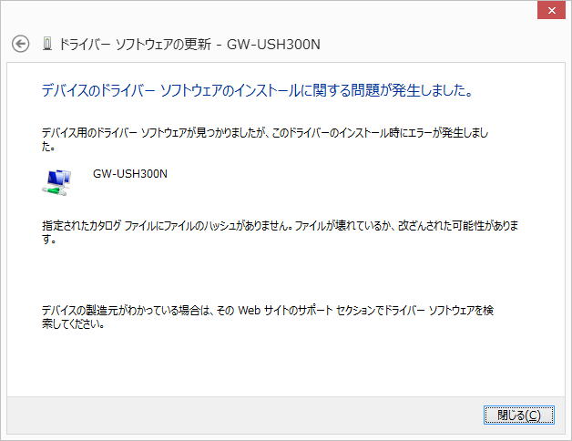

| TOP | weblog | TIPS | Works | リンク |
| 2012-12-20 64bit Windows8専用ドライバじゃないとインストール出来ない仕掛け ちゃんと調べないでWi-Fi USB子機を買ったもんで、ドライバインストール時に以下のようなエラーで怒られ、インストールできません、いまだに使えないです。 ドライバに「ハッシュ」って全然意味が分からなかったし、こんなエラー初めて見たので調べてみました、勉強しないとね。  すぐに見つかるもんですね。 「64bit Windows時代到来 デジタル署名が必須の64bitデバイス・ドライバ(2010/09/09)」 WDFモデルのカーネル・モードで動作するデバイス・ドライバにはデジタル署名が必須で、ＣＡＴファイルに付けられているデジタル署名のハッシュ値を持っていて、インストール時にハッシュの値がチェックされると言うことらしいです。 解説として、WDFモデルではカーネル側には必要最小限の機能だけを置き、必ずしもカーネル・モードで処理する必要のない機能はユーザー・モードで実装することができる。 例えばネットワーク・インターフェイス・カードの場合なら、データを読み書きしたり、割り込みなどを処理したりするドライバは高速性／リアルタイム性が求められるのでカーネル・モードに置くが、上位のプロトコル処理（TCP/IPやBluetooth、FireWireなど）はユーザー・モードで処理しても構わない。 ユーザー・モード側に置けば、たとえ不具合が発生しても終了するのはそのプロセスだけであり（ユーザー・モードではプロセス空間は独立している）、ほかのプロセスやカーネル・コードが巻き込まれてクラッシュする可能性が低くなる。 カーネル・モードとユーザー・モードの分離モデルを採用することにより、システム全体の信頼性を高くできる。 フンフン、まっとうな考え方じゃん、分かるよ。 ドイヒー(酷い)なドライバーもあって、サウンドカード最大手の「ク○○○ヴ」の製品を以前購入した事があるのですけど、こいつのドライバが、とんでもなくバグが多く、いろんなブログで報告されていて、これまたちゃんと調べずに購入して、あるホストプログラムと組み合わせてＳＭＦを再生するとブルーパニックする経験があります。 速攻、８割安でオークションで売っちゃいましたけど。 （余談） PLANEXの「GW-USHyper300」のドライバファイルを見ると「net8192su」ってなっていて、INFファイルを開くと Realtek RTL8192S Wireless USB 2.0 Network Adapter である事がわかります。 本家のウェブサイトを見ても、まだ、Windows8用のドライバはリリースされていないようです。 ハッシュなんて入社２〜３年目の時の「SAPS-20」のルックアップファイル作成時の「ハッシュ値」以来、耳にしていなかった。 イングレスのファイル構造で「ハッシュ」つーのがあったような気がします、そう言えば。 古い話です。 |